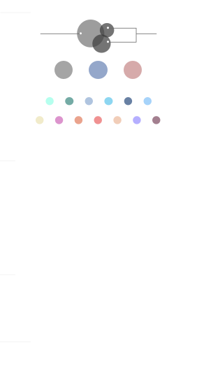

诗词星空
返回
选择筛选条件
星象
全部
斗宿
牛宿
女宿
虚宿
危宿
室宿
壁宿
井宿
鬼宿
柳宿
星宿
张宿
翼宿
轸宿
奎宿
娄宿
胃宿
昴宿
毕宿
觜宿
参宿
角宿
亢宿
氐宿
房宿
心宿
尾宿
箕宿
紫微
太微
天市
金星
木星
水星
火星
土星
作者
情感
全部
兴奋
爱意
悲伤
迷茫
愤怒
焦虑
思念
闲适
开心
喜爱
感悟
向往
赞美
中性
入诗手法
全部
星为主题
星为元素
星为原型意象
星为代语
题材
全部
山水田园
边塞军旅
咏史怀古
咏物言志
送别怀人
羁旅思乡
爱情闺怨
感怀诗
哲理诗
其他
重置
图例

未查询到符合要求的诗词
×
在诗中使用的别名:
星宿名:
主题:
体裁:
情感:
入诗手法: